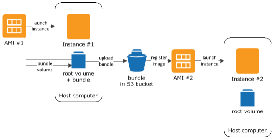

Services
Amazon Elastic Compute Cloud (EC2)
Amazon Elastic Compute Cloud (EC2) provides a resizable, high-performance virtual computing environment that serves as the backbone for diverse cloud-native and enterprise applications. Beyond basic virtualization, its technical architecture is defined by the AWS Nitro System, which offloads critical networking and storage functions to dedicated hardware to provide nearly 100% of the host's resources to the guest instance. This isolation is further bolstered by Amazon Machine Images (AMIs)—pre-configured templates that define the operating system and software stack—and Elastic Block Store (EBS), which provides persistent, high-performance block-level storage volumes for data that must outlive the instance itself.
To ensure high availability and resilience, EC2 instances are deployed within a global infrastructure of AWS Regions and Availability Zones. This allows architects to build multi-tier systems where traffic is distributed via Elastic Load Balancing (ELB) across multiple instances in physically separate data centers, protecting against hardware failures. Security is managed through a layered approach: Security Groups act as stateful virtual firewalls for individual instances, while Network Access Control Lists (ACLs) provide stateless filtering at the subnet level within an Amazon Virtual Private Cloud (VPC).

Figure 1: Overview of AMI creation.
The platform's versatility is evident in its specialized instance families, which now include EC2 Mac Instances for macOS workloads and HPC-optimized instances capable of 400 Gbps networking for complex scientific simulations. Advanced features like Hibernation allow instances to save their RAM state to EBS, enabling rapid resumption of complex workloads without a full system reboot. Combined with Amazon EC2 Auto Scaling, which uses predictive algorithms to adjust capacity before traffic spikes occur, EC2 provides a robust, self-healing infrastructure that aligns costs directly with real-time operational needs.